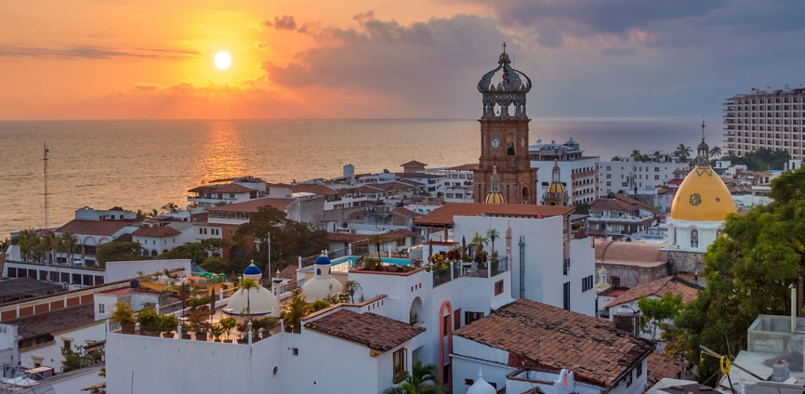

Veracruz

Veracruz se localiza en la costa del atlántico, en el Golfo de México. Al norte colinda con el estado de Tamaulipas, al sur con los estados de Oaxaca y Chiapas, al poniente con San Luís Potosí, Hidalgo y Puebla y al sureste con el estado de Tabasco.
Atractivos Turísticos
San Juan de Ullua
San Juan de Ulúa actualmente es una fortaleza que los visitantes pueden recorrer acompañados de un guía que se encuentra en la entrada, durante el trayecto se puede conocer el primer faro de México, atravesar el puente del último suspiro, entrar al mismo lugar donde estuvo “Chucho el roto” y conocer todo sobre “La Mulata de Córdoba”.
Isla de Sacrificios
Se localiza frente al puerto; es la principal de una serie de islas y bajos de finas arenas blancas, donde el mar adquiere preciosas tonalidades y transparencias. Su nombre fue dado por los españoles, pues a su llegada encontraron evidencia de que en este lugar se celebraban ritos religiosos.
Animales en peligro de extinción
El Tlacuache

Se trata de un animal muy común en el continente, de importancia en distintos nichos ecológicos dada su alimentación omnívora y su vida básicamente arborícola. Según ciertos mitos mexicas, el tlacuache entregó a los seres humanos el secreto del fuego, cuando era celosamente resguardado por los gigantes de la montaña.
Es un animal relativamente agresivo, de mordida dolorosa y hábitos nocturnos, que no representa ningún peligro grave para el ser humano, y que en algunos lugares ha podido incluso ser domesticado.
¿Cómo llego a Veracruz?
Veracruz se localiza en la costa del atlántico, en el Golfo de México. Al norte colinda con el estado de Tamaulipas, al sur con los estados de Oaxaca y Chiapas, al poniente con San Luís Potosí, Hidalgo y Puebla y al sureste con el estado de Tabasco.